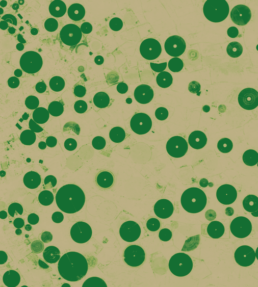

أكاديمية سدايا · الذكاء الاصطناعي في الزراعة والمياه والبيئة
من الصورة إلى الحقل
اليوم 1: ما تقيسه الأقمار والمجسات، ومؤشر الغطاء النباتي أمام التصريحات، ودقة خريطة مفتوحة لكل فئة
مسار الطلاقة في البيانات والذكاء الاصطناعي يومان تدريبيان + يوم للمشروع الختامي 8 جلسات · 8 مختبرات USE-SEC-211
رحّب، وعرّف بنفسك في جملتين. ثم اسأل القاعة: من في عمله يتخذ قرارًا عن مزرعة أو بئر أو شبكة مياه بناء على شيء لم يره بعينه؟ اطلب ثلاثة أمثلة واكتبها على السبورة. اليوم كله سؤال واحد: كم نثق بما تقوله الصورة أو الخريطة عن الحقل، وكيف نقيس ذلك قبل أن نبني عليه قرارًا؟
اليوم
من الصورة إلى الحقل
الجلسة 1 · ما يقيسه كل مصدر الصور والمجسّات والنماذج: ما يقيسه كل منها
الجلسة 2 · الدقة المكانية والزيارة والغيوم البكسل أمام القطعة، والصور الصافية فعلًا
الجلسة 3 · مؤشر الغطاء النباتي وسلسلته الزمنية من الانعكاس إلى المؤشر وسلسلته الزمنية
الجلسة 4 · القطع التي يخالف نمطها التصريح النمط المتوقع والقاعدة التي تقارنه بالتصريح
الجلسة 5 · الفحص الميداني قبل أي جزاء التنبيه سؤال: الزيارات وخطاب المزارع
الجلسة 6 · خرائط الغطاء الأرضي من النماذج المفتوحة نماذج رصد الأرض والنقاط المرجعية والمصفوفة
الجلسة 7 · الدقة لكل فئة والاستخدامات المسموح بها دقة المستخدم ودقة المنتج والاستخدامات
الجلسة 8 · الحقيقة الميدانية وحملات القياس المرجع وفترة الثقة وحملة بميزانية
ثماني جلسات قصيرة، في كل منها مفاهيم موجزة ثم مختبر من 20 أو 25 دقيقة على جدول بيانات. الاستراحات بزر B. لا مختبر يحتاج نموذجًا لغويًّا. اليوم ينتقل من المصادر، إلى مؤشر الغطاء النباتي، إلى التصريحات والتحقق الميداني، إلى دقة خريطة مفتوحة.
دراسة الحالة
هيئة السُّقيا للمياه والزراعة: هيئة افتراضية في إقليم توضيحي
تصاريح المياه الزراعية وتصريحات المزارعين السنوية بمحاصيلهممياه الشرب لعشر مناطق إمداد، لكل منها عداد عند مدخلهاالإرشاد في الري، وتنبيهات الطقس والغبار والحر
ما يأتي من بيانات عامة قياسات Sentinel-2 وESA WorldCover وERA5 والتنبؤات السابقة. أما المكان والقطع وأرقامها وتصريحاتها ونتائج زياراتها فتوضيحية: لا تصف حقلًا حقيقيًّا ولا صاحبه.

أعلى مؤشر للغطاء النباتي في الموسم، مقصوصة ومقلوبة. يحتوي على بيانات Copernicus Sentinel معدّلة (2023، 2024).
عرّف الأشخاص الذين سيتكرر ذكرهم: سهم العطوي وكيل الهيئة للزراعة وصاحب الخريطة الختامية، وندوى الشملان محللة الاستشعار عن بعد، وغالب الهتيلة مدير الشبكات والتسربات، وحوراء الشهيل مسؤولة حوكمة البيانات وحقوق المزارعين، وشجاع السرحاني مرشد الري، وحليس الرشدان مزارع صغير. الملف في labs/files/authority_profile.txt. أكّد أن القياسات من بيانات عامة، وأن المكان والقطع والتصريحات ونتائج الزيارات توضيحية: الصورة مقصوصة ومقلوبة، والمقرر لا يذكر موقع الإقليم، فلا يُنسب شيء منها إلى صاحب حقل حقيقي.
قواعد الورشة
ثلاث درجات لاستعمال المساعد الذكي، تُعلن قبل كل مختبر
دون ذكاء اصطناعي فحص المواقف في المناقشة الختامية، والمختبران 1.6 و1.7 لدقة الخريطة. جدول بيانات وآلة حاسبة فقط.
مساعد معلّم مختبرات الصور والري والتسرب: يشرح صيغة أو مصطلحًا، ولا يحسب عنك ولا يملأ الجدول.
مساعد كامل الخريطة الختامية، على أن تدافع عنها مباشرة وتعيد تقييم حالة يختارها الميسّر.
لا يُرفع إلى أي مساعد ملف من جهتك، ولا اسم مزارع، ولا رقم قطعة حقيقي.
هذا من سياسة المقرر نفسها. السبب في الدرجة الأولى: الفحص يقيس حكمك أنت، والمساعد يخفي ما لا تعرفه. اسأل: من أكمل العمل التحضيري؟ من لم يكمله يأخذ القرار الجاهز في prework_fallback.txt. يعود العمل التحضيري في المختبر 1.1 وفي الخريطة.
قبل أن نبدأ
جدول بيانات مفتوح، وملفات المختبرات على جهازك
افتح صفحة المقرر، ثم صفحة المختبر 1.1
نزّل مجلد الملفات كله، أو افتح كل ملف من رابطه
افتح imagery/plots_reflectance.csv في جدول البيانات
تأكد أن الحروف العربية ظاهرة، لا رموزًا غريبة
يكفي واحد من هذه LibreOffice Calc، أو Microsoft Excel، أو Google Sheets. أي جدول يقرأ ملف CSV بترميز UTF-8 ويرسم خطًّا بيانيًّا.
إن ظهرت العربية رموزًا في Excel: استيراد من نص، وترميز UTF-8. الملف الأكبر نحو 9,400 صف ويفتح في ثوانٍ. لا شيء يُنصّب، ولا حساب يُفتح، ولا مفتاح لأي خدمة. اعرض الأمر خطوة خطوة على شاشتك، وانتظر أن ترفع كل طاولة يدها.
الجلسة 1
ما يقيسه كل مصدر
تفرق بين ما تقيسه الصور البصرية والرادارية والحرارية تختار للسؤال مصدره الأول وتذكر ما لا يستطيعه تميز إعادة التحليل من التنبؤ ومن المجس الميداني 01
من الفضاء
ثلاث طرق للرؤية من الأعلى، ولكل منها ما يعميها
بصرية متعددة الأطياف ضوء الشمس المنعكس في نطاقات مرئية وتحت حمراء: الخضرة وحالة النبات.
تعميها: الغيوم والليل.
رادارية ترسل موجتها وتقيس ارتدادها: الخشونة والرطوبة والماء المكشوف، ليلًا ونهارًا وعبر الغيم.
تعميها: لون النبات، وقراءتها تحتاج خبرة.
حرارية حرارة سطح الأرض: علامات الإجهاد والتبخر.
تعميها: التفاصيل الصغيرة، فدقتها أخشن.
مثال Sentinel-2 للبصرية: 13 نطاقًا بدقة 10 و20 و60 مترًا، وقمران يعيدان الزيارة كل خمسة أيام عند خط الاستواء. ومثال Sentinel-1 للرادار: يعمل ليلًا ونهارًا وفي كل طقس. اسأل: أي الثلاثة كنت تحتاجه يوم السيل الأخير في منطقتك؟ المصادر: Copernicus SentiWiki، صفحتا مهمتي Sentinel-2 وSentinel-1.
على الأرض
المجس والعداد يقيسان نقطة واحدة بدقة، والصورة تقيس المساحة بتقريب
المصدر يقيس قوته حدّه مجس رطوبة التربة الماء في عمق الجذور مباشر ومتكرر نقطة واحدة، وينحرف دون معايرة محطة طقس صغيرة الحرارة والريح والمطر في المزرعة محلية قليلة، وتحتاج صيانة عداد التدفق الماء المار في الأنبوب كل ساعة دقيق ومستمر لا يقول أين ذهب الماء بعده زيارة ميدانية ما هو مزروع فعلًا الحقيقة الميدانية مكلفة وقليلة
الصف الأخير هو ما سنقيس عليه كل شيء اليوم: الحقيقة الميدانية. لاحظ أن المجس نفسه يحتاج «حقيقة» يُعاير عليها، وسنرى مجسًّا منحرفًا في اليوم الثاني. اسأل: كم مجسًّا في جهتك، ومتى عويرت آخر مرة؟
من النماذج
إعادة التحليل تعيد بناء الطقس الماضي، والتنبؤ يقدّر القادم
إعادة التحليل (مثل ERA5) نموذج طقس يُلزَم بكل الأرصاد المتاحة، فيعطي سلسلة متسقة ساعة بساعة من عام 1940 إلى اليوم، بدقة نحو 31 كم. ممتازة لسؤال «هل كان هذا الشتاء أجف من المعتاد؟».
التنبؤ يقدّر الأيام أو المواسم القادمة. لا يُقبل قبل أن تُقاس مهارته أمام المناخ المعتاد في إقليمك: الجلسة الأولى من اليوم الثاني.
أين يقع الخطأ. معاملة خلية من 31 كم كأنها مزرعة. إعادة التحليل تصف الإقليم، لا الحقل.
المصدر: توثيق ERA5 من المركز الأوروبي للتنبؤات الجوية متوسطة المدى (ECMWF): من يناير 1940 إلى اليوم، ساعيًّا، 31 كم. مثال للقاعة: مزرعة في منخفض ووادٍ بجوارها يقعان في خلية واحدة. اسأل: ما الذي تراه إعادة التحليل في يوم عاصفة رعدية محلية؟
كيف تختار
كلمة واحدة في السؤال تحسم المصدر
السؤال (من جهة بيئية ساحلية) الكلمة الحاسمة المصدر الأول هل امتدت بقعة زيت قرب الشاطئ في ليلة غائمة؟ ليلة غائمة رادارية هل تراجعت غابة المانجروف خلال عشر سنوات؟ عشر سنوات سلسلة بصرية طويلة كم تملّح الماء في بئر الرصد الآن؟ في البئر، الآن مجس ميداني هل كان صيف هذا العام أحرّ من المعتاد؟ من المعتاد إعادة التحليل
الأسئلة من جهة بيئية ساحلية، لا من أسئلة المختبر. اقرأ كل سؤال وغطِّ العمودين الأخيرين، واطلب من القاعة الكلمة الحاسمة أولًا ثم المصدر. الطريقة نفسها في المختبر: اقرأ السؤال كله قبل أن تختار.
مصدر واحد نادرًا ما يكفي
المصدر الأول يجيب، والثاني يتحقق
صورة بصرية بقعة داكنة جديدة قرب مزرعة دواجن
←
رادار في اليوم نفسه السطح أملس: ماء مكشوف لا ظل
←
بلاغ أو زيارة تسرب من حوض تبريد
القاعدة. اكتب مع كل مصدر حدّه، ثم اسأل: أي مصدر آخر يغطي هذا الحد؟
المثال مخترع ومن خارج الإقليم. الهدف عادة كتابة عمود «ما لا يخبرك به» بجانب كل اختيار: هو ما ستكتبه في المختبر لكل سؤال. اسأل: ما الحد الذي يغطيه البلاغ ولا يغطيه الرادار؟ الجواب: السبب.
نقطة تحقق
سد صغير بعد عاصفة
جهة بيئية تريد أن تعرف صباح الغد هل فاض سد ترابي صغير بعد عاصفة بدأت الليلة وستبقى غيومها يومين. ما المصدر الأول؟
صورة بصرية بدقة 10 أمتار، لأنها الأوضح في رؤية حدود الماء
صورة رادارية للسد، لأنها ترى الماء المكشوف عبر الغيوم ليلًا
بيانات إعادة التحليل للمطر الذي سقط على الإقليم في الليلة نفسها
صورة حرارية، لأن سطح الماء أبرد من الأرض المحيطة به
لماذا. السؤال عن ماء مكشوف تحت غيوم، والرادار وحده بين الثلاثة يرى عبر الغيم ليلًا ونهارًا.
الإجابة: ب. من اختار «أ» نسي الكلمة الحاسمة «غيومها». من اختار «ج» خلط بين سبب الفيضان ورؤيته. هذا النوع من الأسئلة هو ما سيقابلونه في فحص المواقف.
المختبر 1.1 · 20 دقيقة
ثمانية أسئلة ومصادرها تطابق ثمانية أسئلة رصد في هيئة السُّقيا مع مصدرها الأول، وتكتب لكل سؤال لماذا هذا المصدر وما الذي لا يخبرك به، ثم تضيف سؤال عملك من العمل التحضيري.
D1_1_monitoring_sources.html اقرأ تعريف الهيئة وبطاقة المصادر 4 د طابق كل سؤال بمصدره الأول 6 د اكتب لكل سؤال ما لا يخبرك به المصدر 5 د أضف سؤالك من العمل التحضيري ومصدره 3 د قارن مع زميل الصفوف التي اختلفتما فيها 2 د ✱ إضافي: اختر سؤالين يحتاج كل منهما مصدرين معًا، واكتب ما يضيفه المصدر الثاني راقب عمود «ما لا يخبرك به»: الخطأ الأشيع تركه فارغًا. من ينهي مبكرًا يأخذ التمرين الإضافي. في الدقيقة 15 ذكّر بالصف التاسع من العمل التحضيري. المساعد بدور المعلّم فقط.
بعد المختبر 1.1
ثلاثة أسئلة يخطئ فيها أكثر الناس، وكلمة واحدة في كل منها
السؤال المصدر الكلمة التي تُنسى Q1 مياه السيل رادارية «غيومها أربعة أيام» Q2 شتاء أقل مطرًا إعادة التحليل «متوسط ثلاثين سنة» Q6 الماء في الجذور مجس الرطوبة «منطقة الجذور»
دليل الناتج الأول. ست مطابقات صحيحة على الأقل من ثمانٍ. المفتاح كاملًا عند المدرّب.
المفتاح: Q1←2، Q2←6، Q3←1، Q4←5، Q5←8، Q6←4، Q7←3، Q8←7. اطلب من كل طاولة صفًّا اختلفت فيه وكلمته. ثم اسأل: من وجد مصدرًا لسؤال عمله لا يملكه اليوم؟ هذه بذرة لحالة استخدام في الخريطة.
الجلسة 2
الدقة المكانية والزيارة والغيوم
تحسب عدد البكسلات النقية في قطعة بحسب دقة المصدر تعد الصور الصافية في الشهر من قائمة المشاهد تقرر هل يكفي مصدر لسؤال بعينه من دقته وزيارته 02
الدقة المكانية
الهكتار مئة بكسل بدقة 10 أمتار، وأقل من بكسل واحد بدقة 250 مترًا
100
بكسل في الهكتار بدقة 10 أمتار (مثل Sentinel-2)
11
بكسلًا تقريبًا بدقة 30 مترًا (مثل Landsat)
0.16
من البكسل بدقة 250 مترًا (مثل MODIS)
الحساب. الهكتار 10,000 متر مربع؛ البكسل بدقة 10 أمتار 100 متر مربع، وبدقة 30 مترًا 900، وبدقة 250 مترًا 62,500.
اكتب الحساب على السبورة. اسأل: كم هكتارًا مساحة أصغر مزرعة في منطقتك؟ ثم: كم بكسلًا تكون بكل دقة؟ القسمة وحدها لا تكفي، والشريحة التالية تقول لماذا.
البكسل المختلط
البكسل على الحافة يرى الحقل وما حوله معًا
البكسل النقي يقع كله داخل الحقل
بكسل الحافة يخلط الحقل بالطريق أو الأرض الجرداء، فيبدو الحقل أقل خضرة مما هو
كلما صغر الحقل زادت نسبة الحافة فيه
تقريب عملي: استبعد صفًّا من البكسلات على كل حافة، وعدّ ما بقي
مثال حقل مربع ضلعه 100 متر بدقة 10 أمتار: 100 بكسل، منها 64 نقيًّا فقط. ونفسه بدقة 30 مترًا: ضلعه 3 بكسلات، والنقي منها واحد.
ارسم شبكة 10 في 10 على السبورة وحوّط الصف الخارجي: 36 بكسلًا على الحافة و64 نقيًّا. ثم شبكة 3 في 3: بكسل واحد في الوسط. هذا ما سيجعل الحيازات الصغيرة تبدو مختلفة في الجلسة 5.
الزيارة والغيوم
القمر يمر كل خمسة أيام، لكن الصورة الصافية لا تصل كل خمسة أيام
الزيارة: كم مرة يمر القمر فوق المكانالصورة الصافية: مرور بلا غيم ولا ظل فوق حقلك أنتالشتاء موسم المطر والغيم، وهو موسم القمح
فجوة أسبوعين بلا صورة قد تخفي الزراعة أو الحصاد
اسأل قبل أن تبني على الصور كم صورة صافية فعلًا فوق منطقتي في الشهر الذي يهمني؟ لا: كم مرة يمر القمر.
الزيارة كل خمسة أيام بقمرين عند خط الاستواء (SentiWiki)، وتتداخل المدارات في عرضنا فتزيد المرات. اسأل: في أي شهر تتوقع أقل الصور الصافية في منطقتك؟ سيعدّونها بأنفسهم في المختبر.
رقم الغيم
رقم الغيم في المشهد يصف 110 في 110 كم، لا حقلك
المشهد غيم 10% في مربع كبير
←
غيمة واحدة قد تقع فوق منطقتك بالضبط
←
والعكس مشهد غيمه 60% ومنطقتك صافية
الحل. طبقة تصنيف المشهد (SCL) ترافق كل صورة من المستوى 2A، وتقول لكل بكسل: نبات، أرض، ماء، غيم، ظل. احسب الصافي فوق منطقتك.
المستوى 2A في Sentinel-2 يحمل طبقة تصنيف المشهد بدقة 20 مترًا. اعرض إن أمكن صورة في متصفح Copernicus Browser لمشهد غائم جزئيًّا من أي منطقة. لا تذكر عدد المشاهد المضللة في ملف المختبر: يعدّونها بأنفسهم.
الدقة والزيارة معًا
السؤال يحدد الدقة والزيارة اللتين يحتاجهما
السؤال (أمثلة من خارج الإقليم) الدقة الزيارة هل زُرعت غابة النخيل الجديدة في الواحة؟ 10 أمتار أو أدق شهرية تكفي هل غطت عاصفة رملية طريقًا سريعًا اليوم؟ عشرات الأمتار تكفي يومية هل اتسعت الأراضي المزروعة في المنطقة خلال عقد؟ 30 مترًا تكفي سنوية لعشر سنوات
قاعدة عمل. نحو عشرة بكسلات نقية على الأقل قبل أن تثق بمتوسط حقل.
قاعدة العشرة بكسلات قاعدة عمل لهذه الورشة، لا معيار منشور: قلها كذلك. اسأل لكل صف: ماذا يحدث لو اخترت دقة أخشن؟ ولو اخترت زيارة أقل؟
نقطة تحقق
بستان نخيل من نصف هكتار
مزارع يملك بستان نخيل مربعًا تقريبًا مساحته نصف هكتار. تريد الهيئة أن تتابع خضرته شهريًّا من الصور. أي دقة تعطي عشرة بكسلات نقية على الأقل؟
30 مترًا، لأن سلسلتها أطول وتكفي لمتابعة شهرية
250 مترًا، لأنها يومية والزيارة أهم من الدقة
10 أمتار، فهي تبقي بعد الحافة بكسلات نقية كافية
لا شيء من الصور العامة، فلا بد من صور تجارية أدق
لماذا. ضلع البستان نحو 70 مترًا: 7 بكسلات بدقة 10 أمتار، و5 في 5 نقية بعد استبعاد الحافة، أي 25.
الإجابة: ج. احسبها على السبورة: الجذر التربيعي لخمسة آلاف متر مربع نحو 70 مترًا. من اختار «د» أصاب في الحذر وأخطأ في الحساب. الصيغة نفسها في الخطوة 4 من المختبر.
المختبر 1.2 · 20 دقيقة
كم صورة صافية تصلنا؟ من قائمة حقيقية لمشاهد Sentinel-2 فوق الإقليم لسنة كاملة، تعد الصور الصافية لكل شهر، وتجد المشاهد التي يضلل فيها رقم الغيم، وتحسب البكسلات النقية لأربعة أحجام من القطع.
D1_2_clear_scenes.html افتح قائمة المشاهد واقرأ أعمدتها 2 د عد المشاهد الصافية لكل شهر 6 د جد المشاهد التي يضلل فيها رقم الغيم للمشهد 4 د احسب البكسلات النقية لكل حجم قطعة ودقة 5 د اكتب أي مصدر يكفي لكل حجم 3 د ✱ إضافي: احسب أطول فجوة بين صورتين صافيتين في الشتاء، واكتب ما يعنيه ذلك لرصد الزراعة الفخ التقني الأول عمود التاريخ: بعض البرامج تقرؤه نصًّا وبعضها تاريخًا، وTEXT تعمل في الحالين. راقب من يعدّ المشاهد الصافية برقم غيم المشهد: ذكّره بالعمود D. القائمة حقيقية، والحساب من طبقة SCL أجراه مؤلف المقرر.
بعد المختبر 1.2
الشتاء، موسم القمح، أفقر شهور السنة بالصور الصافية
نوفمبر وديسمبر ومارس
6 كل شهر
رقم المشهد يضلل 5 مشاهد غيمها الكلي أقل من 20% وليست صافية فوق النافذة؛ أسوؤها صافٍ بنسبة 44% فقط.
الحيازة الصغيرة 0.4 هكتار: 16 بكسلًا نقيًّا بدقة 10 أمتار، وصفر بدقة 30 مترًا.
يحتوي على بيانات Copernicus Sentinel معدّلة (2023، 2024). نسبة الصافي فوق الإقليم من حساب مؤلف المقرر.
من تشغيل المختبر: 144 مشهدًا، 112 منها صافية فوق النافذة. أطول فجوة بين صورتين صافيتين من نوفمبر إلى فبراير 12 يومًا. اسأل: لو زُرع القمح في منتصف تلك الفجوة، متى سنعرف؟ هذا ما يجعل التنبيه في الجلسة 4 سؤالًا لا حكمًا.
الجلسة 3
مؤشر الغطاء النباتي وسلسلته الزمنية
تحسب مؤشر الغطاء النباتي من نطاقين تسقط القيم الغائمة قبل أي قراءة تقرأ من السلسلة موعد الزراعة والذروة والحصاد 03
لماذا يعمل المؤشر
الورقة الخضراء تمتص الأحمر وتعكس تحت الأحمر القريب بقوة
نبات كثيف: تحت الأحمر
0.45 أرض جرداء: تحت الأحمر
0.35
الفكرة في النبات فرق كبير بين النطاقين، وفي التربة الجرداء فرق صغير. المؤشر يقيس هذا الفرق.
القيم توضيحية تقريبية لانعكاس سطحي، لا من ملف المختبر. الكلوروفيل يمتص الأحمر للتمثيل الضوئي، وبنية الورقة الداخلية تشتت تحت الأحمر القريب. في Sentinel-2 النطاق الأحمر B04 وتحت الأحمر القريب B08، وكلاهما بدقة 10 أمتار.
التنقية
الغيمة الرقيقة تخفض المؤشر فيبدو الحقل كأنه حُصد
الغيم يعكس النطاقين بقدر متقارب، مثل التربة
الظل يخفض الاثنين، فيضطرب الفرق
النتيجة: هبوط مفاجئ في موعد واحد ثم عودة
القاعدة: لا تقرأ موعدًا يقل صفاؤه فوق الحقل عن 0.9
علامة الخدعة انخفاض حاد في موعد واحد، وارتفاع إلى المستوى نفسه في الموعد التالي. المحصول لا يُحصد ثم يعود في خمسة أيام.
البرسيم يُحشّ فينخفض ثم يعود، لكن في أسابيع لا في موعد واحد. اسأل: كيف تفرق بين حشّة وغيمة في السلسلة؟ الجواب: عمود الصفاء، وشكل العودة.
السلسلة الزمنية
السلسلة تحكي الموسم: متى اخضرّ الحقل، ومتى بلغ ذروته، ومتى انتهى
الأشكال مرسومة لا مقيسة: لا أرقام من ملف المختبر هنا. مرّ على الثلاثة واسأل عن كل منها: متى زُرع؟ متى ذروته؟ ماذا يعني الانخفاض المتكرر في المعمّر؟ الجواب: حشّ البرسيم.
ما لا يقوله المؤشر
المؤشر يقول متى كان الحقل أخضر، لا ماذا زُرع فيه
النوع قمح وشعير وعشب شتوي متشابهة في السلسلة.
التشبع فوق قيمة عالية لا يميز الكثيف من الأكثف.
الخلفية في البساتين المتباعدة تدخل التربة بين الأشجار في كل بكسل.
أين يقع الخطأ. كتابة «هذا قمح» بدل «يشبه نمط القمح». الفرق بين الجملتين هو الزيارة الميدانية.
هذه الحدود هي ما يجعل كل تنبيه في الجلسة القادمة سؤالًا. اطلب من القاعة أن تعيد صياغة جملة «القطعة مزروعة برسيمًا» بلغة الصورة.
نقطة تحقق
احسب المؤشر
بستان في واحة: متوسط الانعكاس الأحمر 0.08، وتحت الأحمر القريب 0.32، في موعد صافٍ. كم مؤشر الغطاء النباتي؟ (رقمان بعد الفاصلة)
لماذا. (0.32 ناقص 0.08) على (0.32 زائد 0.08) = 0.24 على 0.40 = 0.60: خضرة متوسطة، كما في بستان متباعد الأشجار.
الإجابة: 0.60. خطأ شائع: قسمة الفرق على تحت الأحمر وحده (0.75). ثم اسأل: لو كان الموعد غير صافٍ، هل تكتب الرقم؟
المختبر 1.3 · 25 دقيقة
من الانعكاس إلى المؤشر تحسب مؤشر الغطاء النباتي لست قطع من متوسط انعكاسها على كل موعد، وتسقط المواعيد الغائمة، وترسم السلسلة، وتطابق كل نمط بتقويم المحاصيل.
D1_3_ndvi_series.html صفّ ملف الانعكاس على القطع الست 4 د احسب المؤشر في عمود جديد 5 د أسقط المواعيد التي يقل صفاؤها عن 0.9 4 د ارسم سلسلة كل قطعة 6 د طابق كل نمط بتقويم المحاصيل 6 د ✱ إضافي: ارسم قطعة واحدة دون إسقاط الغائم، واكتب أين كان سيخدعك الخطوة الأطول الرسم: من يتعثر في الرسم يملأ الجدول من الأرقام مباشرة. راقب من ينسى إسقاط غير الصافي. إن سأل أحد «أين هذا الحقل؟» فالجواب: المكان والقطع توضيحية، والمقرر لا يذكر موقعها ولا إحداثياتها، لأن التصريحات ونتائج الزيارات مخترعة ولا يصح أن يُنسب شيء منها إلى صاحب حقل حقيقي.
بعد المختبر 1.3
ثلاثة أنماط في ست قطع، وخدعة غيم في واحدة
القطعة ما تقوله السلسلة يشبه P21 جرداء حتى نوفمبر، ذروة 0.92 في فبراير، تنتهي في مايو قمح P47 وP24 تخضر في يناير، ذروة في مارس (0.88 و0.57) قمح متأخر، والثاني خفيف P09 وP11 عالية طوال السنة، مع انخفاضات قصيرة برسيم P19 لا تتجاوز 0.21 بور
خدعة الغيم. في P09 ثلاثة مواعيد غير صافية تنزل إلى 0.17 وسط قيم فوق 0.8.
يحتوي على بيانات Copernicus Sentinel معدّلة (2023، 2024). القطع وأرقامها توضيحية.
من تشغيل المختبر. اسأل عن P24: محصول خفيف أم نصف المحور غير مزروع؟ الصورة لا تحسم، والزيارة تحسم. هذا ما يقودنا إلى قواعد الهيئة في الجلسة القادمة.
الجلسة 4
القطع التي يخالف نمطها التصريح
تلخص سلسلة كل قطعة في أربعة أرقام: قمة الشتاء ومتوسط الصيف وقمة الصيف وقمة الموسم تطبق قاعدة الاتساق على التصريح تكتب طلب تحقق ميداني لكل قطعة مختلفة 04
النمط المتوقع
لكل محصول في الإقليم نمط متوقع، ولكل نمط ما يكذّبه
المحصول النمط المتوقع ما يكذّبه قمح أو شعير شتوي قمة شتوية، صيف أجرد خضرة صيفية عالية برسيم أخضر أغلب السنة صيف أجرد علف صيفي قمة صيفية، شتاء أجرد قمة شتوية بور منخفض طوال السنة أي قمة خضراء
الجدول من تقويم المحاصيل في ملفات المختبر. اسأل: أي اختلاف بين التصريح والنمط يعني ماءً أكثر مما صُرّح به؟ الجواب: برسيم أو علف صيفي مصرّح بأنه قمح أو بور، لأن الصيف هو موسم العطش.
التلخيص
أربعة أرقام تلخص سنة من السلسلة
قمة الشتاء أعلى قيمة في ديسمبر إلى مارس
متوسط الصيف متوسط يونيو إلى أغسطس
قمة الصيف أعلى قيمة في يونيو إلى سبتمبر
قمة الموسم أعلى قيمة في السنة كلها
من القيم الصافية فقط. رقم واحد من موعد غائم يغير القمة أو المتوسط.
لماذا المتوسط في الصيف والقمة في الشتاء؟ القمة تلتقط محصولًا قصيرًا في ذروته، والمتوسط يلتقط خضرة مستمرة. في جدول البيانات: MAXIFS وAVERAGEIFS بشرط القطعة والشهر.
القاعدة
القاعدة تحدد من نسأل، لا من نعاقب
السلسلة أربعة أرقام
←
القاعدة هل يتسق النمط مع التصريح؟
←
إن لم يتسق طلب تحقق ميداني
←
الزيارة وحدها تقرر
قاعدة الهيئة. لا جزاء ولا غرامة على مزارع بناء على صورة أو نموذج وحده.
هذه القاعدة من سياسة المقرر نفسها: التنبيه يقود إلى زيارة، لا إلى جزاء آلي. وهي من مبدأ الإنسانية ومبدأ المساءلة والمسؤولية في مبادئ أخلاقيات الذكاء الاصطناعي من سدايا. اسأل: لماذا لا تُرسل الغرامة ويُترك للمزارع أن يعترض؟
الحدود
كل حد في القاعدة اختيار، والحالات قرب الحد تحتاج عينًا
حد 0.50 لقمة الشتاء يجعل 0.49 «لا يتسق»
الزراعة المتأخرة تنقل القمة إلى أبريل
محصولان في سنة واحدة يكسران كل القواعد
حقل نصفه مزروع يعطي قمة منخفضة
مثال من واحة أخرى حقل صرّح صاحبه بشعير: قمة شتائه 0.48 ومتوسط صيفه 0.12. القاعدة تنبه، والنمط شعير خفيف في الغالب.
المثال مخترع ومن خارج الإقليم. اسأل: هل نغيّر الحد إلى 0.45؟ ماذا نكسب، وما الذي يفوتنا؟ لا جواب واحدًا: كل حد يقايض تنبيهات أكثر بحالات فائتة أقل.
من التنبيه إلى الطلب
طلب التحقق يصف ما رأيناه، ولا يحكم
لا «القطعة مخالفة: زُرعت برسيمًا وصُرّح بقمح.»
نعم «السلسلة خضراء طوال الصيف (متوسط 0.6)، والتصريح قمح. يُسأل على الأرض: ماذا زُرع، ومتى؟»
ثلاثة أجزاء. ما رأيناه في السلسلة، وما صُرّح به، وما يُسأل عنه على الأرض.
المثال مخترع. اطلب من القاعة أن تحوّل جملة «المزارع لم يزرع شيئًا» إلى لغة الطلب. الجواب: «السلسلة منخفضة طوال الموسم؛ يُسأل: هل زُرعت القطعة؟».
نقطة تحقق
حقل في واحة أخرى
حقل صرّح صاحبه بعلف صيفي. أرقام سلسلته: قمة الشتاء 0.81، ومتوسط الصيف 0.15، وقمة الصيف 0.22. بقواعد الهيئة، ما الخطوة التالية؟
إنذار للمزارع بأن تصريحه غير صحيح
لا شيء، فالحقل مزروع والمزارع صرّح بزراعة
انتظار صور الموسم القادم قبل أي إجراء
طلب تحقق: النمط شتوي والتصريح صيفي
لماذا. قمة شتاء عالية وصيف أجرد نمط شتوي، وقاعدة العلف الصيفي تطلب العكس. الخطوة طلب تحقق يصف ذلك.
الإجابة: د. من اختار «أ» تجاوز قاعدة الهيئة. من اختار «ب» خلط بين «مزروع» و«كما صُرّح». الأرقام مخترعة ومن خارج ملف المختبر.
المختبر 1.4 · 25 دقيقة
قطع لا يتسق نمطها مع التصريح تلخص سلسلة المؤشر لكل قطعة من قطع الإقليم، وتطبق قواعد الهيئة على المحصول المصرّح به، وتخرج بقائمة القطع المختلفة وطلب تحقق ميداني لكل منها.
D1_4_plot_flags.html اقرأ قواعد الاتساق وملف التصريحات 3 د احسب الأرقام الأربعة لكل قطعة 9 د طبّق القاعدة على المحصول المصرّح به 6 د اكتب طلب تحقق ميداني لكل قطعة في القائمة 7 د ✱ إضافي: اكتب لقطعة في القائمة ثلاثة أسباب بريئة قد تفسر النمط الفخ التقني: MAXIFS بشرط واحد للأشهر 12 إلى 3 لا يعمل عبر رأس السنة؛ الصيغة في الصفحة تأخذ أكبر اثنتين. من يتأخر في الأرقام الأربعة يأخذ start/flags.csv من المختبر التالي ليرى الشكل، لا ليغش. راقب لغة طلبات التحقق.
بعد المختبر 1.4
ست عشرة قطعة من خمس وستين لا يتسق نمطها مع تصريحها
0.499
قمة شتاء P04: أقل من الحد بجزء من ألف
السؤال للمختبر التالي. كم من هذه الست عشرة سيتبين على الأرض أن تصريحها صحيح؟
السلاسل من بيانات Copernicus Sentinel معدّلة (2023، 2024)، والتصريحات اصطناعية.
من تشغيل المختبر: P03، P04، P05، P08، P10، P14، P25، P30، P41، P44، P45، P51، P56، P57، P59، P64. لا تقل نتائج الزيارات بعد: تُكشف بعد المختبر 1.5. اسأل القاعة أن تخمن النسبة، واكتب التخمين على السبورة.
الجلسة 5
الفحص الميداني قبل أي جزاء
تقارن نسبة التنبيه بين القطع الصغيرة والكبيرة ترتب الزيارات بطاقة فريق التحقق تكتب خطاب تحقق يطلب ولا يتهم 05
من يدفع ثمن الخطأ
التنبيه الكاذب يكلف المزارع الصادق، لا الهيئة وحدها
تنبيه كاذب مزارع صادق يتلقى خطابًا، ويترك حقله لاستقبال الزيارة، ويقلق على تصريحه. وفريق الهيئة يضيع زيارة.
حالة فائتة ماء يُستهلك فوق المصرّح به موسمًا كاملًا. الهيئة تخسر ماءً، والمزارعون الملتزمون يخسرون عدلًا.
السؤال. على من يقع كل خطأ؟ وهل يقع على فئة أكثر من غيرها؟
اسأل: أي الخطأين تراه الهيئة في تقاريرها، وأيهما لا تراه؟ الحالة الفائتة لا تظهر في أي تقرير، والتنبيه الكاذب يظهر في شكوى. هذا يدفع الجهات إلى خفض التنبيهات أو رفعها لأسباب لا علاقة لها بالعدل.
الحيازات الصغيرة
الحقل الصغير يرى جيرانه أكثر، فتبدو قمته أدنى
نسبة بكسلات الحافة أكبر في الحقل الصغير
الحافة تخلط المحصول بالأرض الجرداء أو بالطريق
القمة تنخفض فتقترب من حدود القاعدة
والمرجع الميداني للحيازات الصغيرة أقل في كل مكان
الحساب نفسه حقل من 3 هكتارات بدقة 10 أمتار: ضلعه نحو 17 بكسلًا، وحافته نحو ربع بكسلاته.
الحساب: الجذر التربيعي لثلاثين ألف متر مربع نحو 173 مترًا، أي 17 بكسلًا؛ الحافة 4 في 16 تقريبًا، أي 64 من 289، نحو الربع. اسأل: لو كان أصحاب الحيازات الصغيرة أقل قدرة على الرد على خطاب رسمي، ماذا يعني ذلك للعدل؟
طاقة الفريق
الطاقة تفرض ترتيبًا، والترتيب قرار يُكتب سببه
طريقة الترتيب ما تكسبه ما تخسره الأكبر مساحة أولًا أكبر فرق محتمل في الماء لا تعرف أبدًا كيف تعمل الطريقة على الصغار عشوائيًّا تقدير غير منحاز لنسبة الخطأ قد تؤجل أكبر الفروق الأكبر أولًا، مع حصة للصغار الماء والتعلم معًا زيارات أقل للكبار
لا جواب واحدًا؛ المطلوب في المختبر أن يُكتب السبب. الصف المظلل هو ما يقترحه ملف الفريق في المختبر. اسأل: من في جهتك يقرر ترتيب الزيارات، وهل يكتب لماذا؟
الخطاب
خطاب يطلب ولا يتهم: خمسة أجزاء
رقم القطعة كما في السجلما رأيناه بكلمات المزارع: «الخضرة هذا الشتاء أخف مما نراه عادة»ما صرّحتم به دون تعليقما نطلبه: موعد زيارة، أو صورة من الحقلحقكم في الرد، وأن الزيارة ليست مخالفة
كلمات لا تُكتب. مخالفة، غرامة، تلاعب، «وإلا».
اقرأ الجزء الثاني بصوتين: مرة «لاحظنا تلاعبًا في...» ومرة «كانت الخضرة أخف...». اسأل: أيهما يجعل المزارع يفتح بابه؟ المساعد مسموح في المختبر لمراجعة الخطاب، والكلمات الأخيرة للمشارك.
المرجعية الوطنية
مبادئ أخلاقيات الذكاء الاصطناعي من سدايا تضع الإنسان في كل تنبيه
الإنصاف لا تقع الأخطاء على فئة أكثر من غيرها دون أن نعرف ونعالج.
الإنسانية قرار يمس إنسانًا لا يُترك لنظام وحده.
المساءلة والمسؤولية صاحب مسمّى لكل قرار، وطريق للاعتراض.
المبادئ السبعة في الوثيقة: الإنصاف، والخصوصية والأمن، والإنسانية، والمنافع الاجتماعية والبيئية، والموثوقية والسلامة، والشفافية والقابلية للتفسير، والمساءلة والمسؤولية. اخترنا ثلاثة تمس التنبيه مباشرة، والكلام تحت كل منها تطبيقنا له لا نص الوثيقة. المصدر: سدايا، مبادئ أخلاقيات الذكاء الاصطناعي.
نقطة تحقق
جملة في خطاب
أي جملة تصلح في خطاب تحقق إلى مزارع صغير نبّهت الصور إلى قطعته؟
«نرجو تحديد موعد لزيارة الحقل، والزيارة للتحقق ولا تعني مخالفة.»
«تبيّن لنا أن قطعتكم مخالفة، ويُرجى تصحيح الوضع خلال أسبوع وإلا طُبّقت الغرامة.»
«أظهر نظام الذكاء الاصطناعي في الهيئة أن تصريحكم غير صحيح بدرجة عالية من الثقة.»
«عليكم إثبات صحة تصريحكم بالمستندات قبل نهاية الموسم.»
لماذا. الجملة الأولى تطلب موعدًا وتقول صراحة إن الزيارة ليست مخالفة. البقية تحكم أو تهدد أو تنقل العبء.
الإجابة: أ. اسأل من اختار «ج»: ما المشكلة في ذكر النظام؟ الجواب: لا مشكلة في الشفافية، المشكلة في «غير صحيح» قبل الزيارة.
المختبر 1.5 · 20 دقيقة
خطة الزيارات وخطاب المزارع من قائمة التنبيهات الجاهزة تقارن نسبة التنبيه في القطع الصغيرة بالكبيرة، وترتب زيارات أسبوعين بطاقة الفريق، وتكتب خطاب التحقق إلى صاحب قطعة صغيرة.
D1_5_field_checks.html احسب نسبة التنبيه لكل حجم من القطع 4 د اقرأ طاقة الفريق ورتّب زيارات أسبوعين 6 د اكتب خطاب التحقق للمزارع 7 د راجع الخطاب: هل فيه اتهام أو جزاء؟ 3 د ✱ إضافي: اقترح تعديلًا على القاعدة للقطع الصغيرة، واكتب ما يكلفه من لم يكمل المختبر 1.4 يبدأ من start/flags.csv. وزّع القاعة: نصفها يبدأ بالخطاب، ونصفها بالترتيب، ثم يتبادلون. اقرأ خطابين بصوت عالٍ في آخر خمس دقائق.
بعد المختبر 1.5: ما وجدته الزيارات
نسبة التنبيه واحدة، لكن تنبيهات القطع الصغيرة كلها كانت كاذبة
في القائمة تأكد على الأرض التصريح صحيح القطع الكبيرة (53) 13 (25%) 7 6 القطع الصغيرة (12) 3 (25%) 0 3
ما يعنيه. لو أُرسلت الغرامة مع التنبيه، لدفعها تسعة مزارعين صادقين من ستة عشر، بينهم أصحاب الحيازات الصغيرة الثلاث كلهم.
نتائج الزيارات اصطناعية، والسلاسل حقيقية. التي تأكدت: برسيم مصرّح بأنه قمح (P05، P30، P44)، وبور مصرّح بأنه قمح (P08، P10)، وعلف صيفي مصرّح بأنه قمح (P25)، وقمح مصرّح بأنه بور (P45). قارن بالتخمين على السبورة. حليس الرشدان صاحب P51: تصريحه صحيح، وحقله خفيف وصغير.
الجلسة 6
خرائط الغطاء الأرضي من النماذج المفتوحة
تشرح ما تعطيه نماذج الأساس لرصد الأرض وما لا تعطيه تميز دقة الخريطة المعلنة عالميًّا من دقتها في إقليمك تبني مصفوفة الالتباس من نقاط مرجعية 06
نماذج الأساس لرصد الأرض
نموذج أساس يتعلم من ملايين الصور، ثم يُضبط على مهمة واحدة
Prithvi-EO-2.0 (IBM وNASA) دُرّب مسبقًا على 4.2 مليون عينة من منتج HLS بدقة 30 مترًا وست نطاقات. يُضبط بعد ذلك على مهام مثل تقسيم المحاصيل أو الفيضانات.
TerraMind (IBM ووكالة الفضاء الأوروبية) متعدد المصادر: يقبل Sentinel-2 وSentinel-1 وغيرهما، ويتعامل مع مصدر ناقص.
ما يصلك منه. في عمل الهيئة لن تدرّبه: يصلك مخرجه، خريطة بفئة لكل بكسل، من مورّد أو من فريق داخلي.
المصادر: بطاقتا النموذجين على Hugging Face. النموذج المفتوح لا يعني مخرجًا دقيقًا في إقليمك: الضبط والبيانات المحلية يقرران. في هذه الورشة لا نشغّل أيًّا منهما: الخانة في المقرر «مخرجات تُقدَّم»، ومخرجنا في المختبر منتج مفتوح آخر بنموذج تعلم آلي، ESA WorldCover.
المنتج والنموذج
خريطة جاهزة من نموذج مفتوح: مجانية، ودقتها المعلنة عالمية
ESA WorldCover 2021: خريطة غطاء أرضي للعالم بدقة 10 أمتار، من Sentinel-1 وSentinel-2رخصة CC BY 4.0: مجانية، بلا قيد على الاستعمال، مع ذكر المصدر
دقتها الكلية المعلنة على مستوى العالم 76.7%
السؤال الذي يبقى 76.7% على مستوى العالم. كم في إقليمنا؟ وكم لكل فئة؟
المصدر: صفحة الوصول إلى بيانات ESA WorldCover (الرخصة والدقة). لا تقل الدقة في الإقليم: يقيسونها بأنفسهم. اسأل: لو كانت دقة منتج 95% عالميًّا، ماذا تعرف عن فئة المحاصيل في الصحراء؟ الجواب: لا شيء بعد.
النقاط المرجعية
الدقة تُقاس بنقاط نعرف فئتها من مصدر مستقل عن الخريطة
اسحب نقاطًا عشوائية من كل فئة في الخريطة
←
سجّل فئة كل نقطة من مصدر آخر: زيارة أو صور أدق
←
قارن فئة الخريطة بفئة المرجع
أين يقع الخطأ. نقاط من «حيث يسهل الوصول»، أو مرجع يراه المسجّل بعد أن يعرف ما تقوله الخريطة.
السحب من كل فئة بعدد ثابت يسمى عينة طبقية بحسب فئة الخريطة، ويضمن أن الفئات الصغيرة لها نقاط كافية. نعود إلى حدود المرجع في الجلسة 8. اسأل: أي مرجع في جهتك يُجمع بعد أن يُعرف الجواب؟
مصفوفة الالتباس
الصفوف ما تقوله الخريطة، والأعمدة ما على الأرض
الخريطة \ المرجع ماء سبخة جرداء ماء 18 2 0 سبخة 6 9 15 جرداء 0 4 26
مثال مخترع لساحل جهة بيئية: 80 نقطة. القطر حيث يتفقان: 53.
المثال مخترع ومن خارج الإقليم. اقرأ الصف المظلل بصوت عالٍ: من 30 نقطة تقول الخريطة إنها سبخة، 9 فقط سبخة، و15 أرض جرداء. اسأل: لو استُعملت هذه الخريطة لحماية السبخات، ماذا يحدث؟
العالمي والمحلي
المحاور الدائرية والبساتين والقرى الصحراوية ليست «العالم المتوسط»
المحاصيل المروية خضراء طوال السنة في صحراء: قد تشبه المرعى أو البستان.
البساتين المتباعدة أشجار وتربة في البكسل نفسه.
العمران المتناثر منشآت وطرق في أرض جرداء، بلون التربة نفسه.
هذه أسباب محتملة للخطأ لا نتائج. لا تقل أي فئة ستخطئ في المختبر. اسأل: أي من الثلاثة تتوقع أن يكون الأصعب في إقليمنا، ولماذا؟ اكتب التوقعات على السبورة وارجع إليها بعد المختبر.
نقطة تحقق
اقرأ الصف
في مصفوفة الساحل على الشريحة السابقة، الخريطة تقول «سبخة» في 30 نقطة. ماذا تقول هذه الأرقام؟
60% من سبخات الخريطة سبخة فعلًا، أي 9 من 15
30% من سبخات الخريطة سبخة فعلًا، والباقي غيرها
دقة الخريطة 66% لأن القطر 53 من 80 نقطة
أكثر ما تخلط به الخريطة السبخة هو الماء المكشوف
لماذا. الصف ما تقوله الخريطة: 9 من 30 على القطر، أي 30%، والباقي جرداء في الغالب.
الإجابة: ب. هذه دقة المستخدم لفئة السبخة، وتأتي في الجلسة التالية. من اختار «أ» قلب الصفوف والأعمدة، وهو الخطأ الأشيع في المختبر.
المختبر 1.6 · 25 دقيقة
مصفوفة الالتباس من 200 نقطة دون مساعد ذكي: تعد 200 نقطة مرجعية في نافذة الإقليم بحسب فئة الخريطة المفتوحة وفئة المرجع، فتبني مصفوفة الالتباس وتقرأ أين تخطئ الخريطة.
D1_6_confusion_matrix.html اقرأ دليل الفئات وكيف وُضع المرجع 4 د ابنِ المصفوفة بصيغة العد الشرطي 10 د تحقق أن مجموعها 200 3 د اكتب أكثر خطأين تكرارًا 8 د ✱ إضافي: احسب نسبة النقاط المرجعية المزروعة التي رأتها الخريطة عشبية أو جرداء دون مساعد ذكي. ذكّر بالترتيب: الصفوف الخريطة، والأعمدة المرجع. الصيغة واحدة تُنسخ إلى خمس وعشرين خلية؛ من يكتبها خلية خلية سيتأخر. اطلب من كل طاولة أن تقول ماذا يعني أكبر رقم خارج القطر قبل أن تكتبه.
بعد المختبر 1.6
122 من 200 على القطر، وخطآن كبيران يحكيان الإقليم
27 نقطة: «عشبية» في الخريطة، مزروعة على الأرض محاور برسيم خضراء طوال السنة رأتها الخريطة مرعى.
19 نقطة: «مبنية» في الخريطة، جرداء في المرجع طرق ومنشآت مزارع متفرقة خارج حدود القرى التي رسمها المؤلف: الخطأ هنا في المرجع بقدر ما هو في الخريطة.
© ESA WorldCover project 2021، برخصة CC BY 4.0؛ المرجع من بيانات Copernicus Sentinel معدّلة (2021).
والسؤال للجلسة التالية. ماذا يعني هذا لمن يحسب مساحة الأرض المزروعة من الخريطة؟
من تشغيل المختبر. المرجع المزروع 70 نقطة، رأت الخريطة 27 منها عشبية. قارن بتوقعات القاعة على السبورة. الخطأ الثاني فرصة للصدق: المرجع من صور ومن حدود رسمها إنسان، وله أخطاؤه. نعود إليه في الجلسة 8.
الجلسة 7
الدقة لكل فئة والاستخدامات المسموح بها
تحسب الدقة الكلية ودقة المستخدم ودقة المنتج تفسر الفرق بين دقة المستخدم ودقة المنتج في قرار تقرر الاستخدامات المسموح بها من دقة كل فئة 07
الدقة الكلية
الرقم الكلي يخفي الفئة الضعيفة حين تكون الفئات غير متساوية
66%
الدقة الكلية في مثال الساحل (53 من 80)
30%
دقة فئة السبخة وحدها في المثال نفسه
أين يقع الخطأ. «الخريطة دقيقة بنسبة 66%، فلنحمِ بها السبخات.» القرار يعتمد على فئة واحدة، فدقتها هي المهمة.
المثال نفسه من الجلسة السابقة، مخترع. اسأل: لو كانت الخريطة أرضًا جرداء في 90% من الإقليم، ما الدقة الكلية لخريطة تقول «جرداء» في كل مكان؟ الجواب: 90%، وهي بلا فائدة لأي قرار.
دقتان لكل فئة
دقة المستخدم لمن يقرأ الخريطة، ودقة المنتج لما تفوّته
دقة المستخدم دقة المنتج السؤال من النقاط التي تقول الخريطة إنها من الفئة، كم هي منها؟ من النقاط التي هي من الفئة، كم رأتها الخريطة؟ الحساب القطر على مجموع الصف القطر على مجموع العمود سبخة الساحل 9 من 30 = 30% 9 من 15 = 60%
مجموع عمود السبخة في المثال: 2 زائد 9 زائد 4 = 15. اسأل: أي الرقمين يهم من يرسل فريقًا إلى كل سبخة في الخريطة؟ (المستخدم: كم زيارة تضيع.) وأيهما يهم من يريد حماية كل السبخات؟ (المنتج: كم سبخة لا تُحمى.)
من الدقة إلى القرار
كل استخدام يحتاج دقة بعينها، لا «دقة عالية»
الاستخدام الدقة التي تهم لماذا إحصاء مساحة فئة المستخدم والمنتج معًا الزائد والناقص يغيران المجموع توجيه فريق إلى مواقع المستخدم كل خطأ زيارة ضائعة خدمة تصل إلى كل من في الفئة المنتج كل فائت شخص لا تصله الخدمة
الأمثلة عامة. في المختبر ستة استخدامات مقترحة، لكل منها الدقة التي يحتاجها مكتوبة. اسأل: تنبيه بالجفاف يُرسل إلى المزارع المزروعة في الخريطة: أي الدقتين أهم؟ (المنتج: من لا تراه الخريطة لا يصله التنبيه.)
الحد الذي لا يتغير
لا قرار على مزارع واحد من خريطة وحدها، مهما بلغت دقتها
دقة 95% تعني خطأً في نقطة من كل عشرين
في إقليم فيه آلاف القطع، هذه مئات القرارات الخاطئة
والخطأ لا يتوزع بالتساوي: يزيد في الصغير والنادر
ما يجوز إحصاء، وتوجيه عمل ميداني، وخدمة لا تضر من تفوّته. وما يمس شخصًا واحدًا يمر بزيارة.
هذه قاعدة الهيئة في دراسة الحالة، ومنسجمة مع مبدأي الإنسانية والمساءلة في مبادئ سدايا. في المختبر استخدام مقترح من هذا النوع: يُرفض مهما كانت الأرقام. اسأل: هل رأيت قرارًا فرديًّا في جهتك بُني على خريطة؟
نقطة تحقق
احسب دقة المنتج
في مصفوفة الساحل، عمود «جرداء» على الأرض فيه: 0 في صف الماء، و15 في صف السبخة، و26 في صف جرداء. كم دقة المنتج لفئة جرداء؟ (رقمان بعد الفاصلة)
لماذا. القطر 26 على مجموع العمود 41 (0 زائد 15 زائد 26) = 0.63. دقة المستخدم هي التي تساوي 26 على 30 = 0.87.
الإجابة: 0.63. من كتب 0.87 قسم على مجموع الصف، فحسب دقة المستخدم. اسأل: 15 نقطة جرداء على الأرض قالت عنها الخريطة سبخة؛ لمن يهم هذا الرقم؟
المختبر 1.7 · 25 دقيقة
جدول الدقة والاستخدامات المسموح بها دون مساعد ذكي: من مصفوفة جاهزة تحسب الدقة الكلية ودقة المستخدم ودقة المنتج لكل فئة، ثم تقرر لكل استخدام مقترح للخريطة هل يُسمح به.
D1_7_accuracy_uses.html احسب الدقة الكلية 3 د احسب دقة المستخدم لكل فئة 6 د احسب دقة المنتج لكل فئة 6 د قرر لكل استخدام مقترح: مسموح أم لا 7 د اكتب الاستخدامات المسموح بها في سطرين 3 د ✱ إضافي: اكتب لاستخدام غير مسموح ما الذي يجعله مسموحًا دون مساعد ذكي. من لم يكمل المختبر 1.6 يبدأ من start/confusion_matrix.csv. الفخ: قسمة القطر على العمود لدقة المستخدم. اسأل كل طاولة: من يقرأ الخريطة، ومن يملك الأرض؟ والفخ الثاني: صفر لدقة منتج فئة لا نقطة مرجعية فيها.
بعد المختبر 1.7
61% في الإقليم أمام 76.7% في العالم، واستخدام واحد من ستة مسموح
الفئة دقة المستخدم دقة المنتج مزروعة 0.717 0.614 جرداء 0.883 0.576 مبنية 0.367 0.579 عشبية 0 لا نقاط مرجعية شجرية 0.75 0.789
المسموح: توجيه حملة رصد ميداني للمزارع الجديدة (C). تنبيهات الري (F) غير مسموحة: الخريطة تفوّت نحو 39% من المزروع.
© ESA WorldCover project 2021، برخصة CC BY 4.0؛ المرجع من بيانات Copernicus Sentinel معدّلة (2021).
من تشغيل المختبر. A غير مسموح (يحتاج 0.85 في الاثنتين)، B مرفوض مهما كانت الدقة (قرار فردي)، D غير مسموح، E قريب جدًّا (0.789 أمام 0.80). اسأل عن F: من هم المزارعون الذين لن تصلهم التنبيهات؟ أصحاب البرسيم الذي رأته الخريطة مرعى.
الجلسة 8
الحقيقة الميدانية وحملات القياس
تقيّم مرجعًا من حيث الاستقلال والتوقيت والتمثيل تحسب نصف عرض فترة الثقة لدقة فئة توزع ميزانية حملة ميدانية على الفئات 08
المرجع بيانات أيضًا
المرجع الذي قسنا عليه له أخطاؤه، فاسأل عنه ما تسأله عن الخريطة
الاستقلال هل رأى المسجّل الخريطة قبل أن يسجل؟ هل بُني المرجع من الصور نفسها؟
التوقيت هل يصف المرجع السنة نفسها؟ محور يُزرع عامًا ويُترك عامًا.
التمثيل هل النقاط عشوائية في كل فئة، أم حيث يسهل الوصول؟
اعترف بحدود مرجعنا: وضعه مؤلف المقرر من سلسلة صور Sentinel-2 لعام 2021، وحدود القرى رسمها بيده. مستقل عن الخريطة في الطريقة، لكنه ليس زيارة. ولهذا جاء الخطأ الثاني في المختبر 1.6 من المرجع جزئيًّا. اسأل: أي الثلاثة أضعف في مرجعنا؟
كم نثق بالرقم
دقة من ثلاثين نقطة تتأرجح كثيرًا؛ فترة الثقة تقول بكم
half width = 1.96 x sqrt( p x (1 - p) / n )
p = 0.80, n = 30 half width = 0.14 0.66 to 0.94
p = 0.80, n = 120 half width = 0.07 0.73 to 0.87قاعدة عملية. أربعة أضعاف النقاط تقسم نصف العرض على اثنين.
الصيغة تقريب طبيعي لفترة ثقة 95% لنسبة، وتنهار عند دقة صفر أو واحد. الأرقام مثال، لا من الإقليم. اسأل: دقة فئة 0.80 من 30 نقطة، هل تكفي لاستخدام يحتاج 0.75؟ الجواب: الفترة تبدأ من 0.66، فلا نعرف بعد.
كم نقطة نحتاج
اعكس الصيغة لتعرف عدد النقاط لنصف عرض تختاره
n = 1.96^2 x p x (1 - p) / h^2
p = 0.80, h = 0.10 n = 62
p = 0.50, h = 0.10 n = 97 the worst caseعند p = 0.5 يبلغ p(1 − p) أقصاه، فهو أسوأ حالة. اطلب من القاعة أن تحسب n لـ p = 0.9 و h = 0.10: الجواب 35. الأرقام مثال.
الميزانية
وزّع زيارات الحملة على الفئات التي تقوم عليها قرارات
1 · القرارات أي استخدام ينتظر أي فئة؟
←
2 · الفجوة كم نقطة تنقص كل فئة؟
←
3 · التكلفة هل بعض النقاط أغلى؟
←
4 · الترتيب الأقرب إلى قرار أولًا
أين يقع الخطأ. وضع الزيارات كلها في الفئة الأسوأ دقة. الأسوأ ليس دائمًا الأهم، والسؤال عن كل فئة: أي قرار ينتظر قياسها؟
اسأل: فئة في الخريطة لم تصب أي نقطة، وكل نقاطها من فئة أخرى: نقيسها أكثر أم ندمجها في تلك الفئة؟ لا تذكر أي فئة في إقليمنا: يقررون في المختبر.
نقطة تحقق
هل نعرف بعد؟
جهة بيئية قاست دقة المستخدم لفئة «مانجروف» في خريطة: 0.85 من 20 نقطة. الاستخدام المقترح يحتاج 0.80 على الأقل. ما الحكم؟
مسموح، لأن 0.85 أكبر من 0.80
غير مسموح، لأن الدقة الحقيقية أقل من 0.80
لا نعرف بعد: نجمع نقاطًا أكثر
نستعمل الدقة الكلية للخريطة بدلًا منها
لماذا. 1.96 × الجذر التربيعي لـ (0.85 × 0.15 ÷ 20) ≈ 0.16، فالفترة من 0.69 إلى 1. الحد داخلها.
المختبر 1.8 · 20 دقيقة
خطة حملة ميدانية من جدول الدقة الجاهز تحسب فترة الثقة لدقة المستخدم في كل فئة، والنقاط اللازمة لتضييقها، وتوزع ميزانية 120 زيارة على الفئات.
D1_8_field_campaign.html احسب نصف عرض الفترة لكل فئة 5 د احسب النقاط اللازمة لنصف عرض 0.10 5 د وزع 120 زيارة مع تكلفة الأرض الجرداء 6 د اكتب قواعد الحملة: التوقيت والاستقلال 4 د ✱ إضافي: اكتب كيف تضمن ألا يرى فريق الحملة ما تقوله الخريطة قبل التسجيل من لم يكمل المختبر 1.7 يبدأ من start/accuracy_table.csv. أكثر نقاش مفيد: ماذا نفعل بفئة دقتها صفر؟ اترك الطاولات تختلف، ثم اطلب سببًا من الاستخدامات لكل توزيع.
بعد المختبر 1.8
131 نقطة لازمة و120 في الميزانية: الترتيب قرار
الفئة نصف العرض اليوم نقاط إضافية لازمة توزيع مرجعي مزروعة 0.114 18 18 جرداء 0.081 0 0 مبنية 0.172 60 49 شجرية 0.19 53 53
العشبية. كل نقاطها مزروعة على الأرض: تُدمج في المزروعة لهذا الإقليم، ولا تُقاس.
من تشغيل المختبر. التوزيع المرجعي: المزروعة أولًا لأن الاستخدامين C وF عليها، ثم الشجرية لأن E على بعد جزء من مئة من الحد، والباقي للمبنية. أي توزيع آخر مقبول بسبب مكتوب. والقواعد: نفس الموسم، والمسجّل لا يرى الخريطة، والنقاط عشوائية.
خلاصة اليوم
ثلاثة أشياء تبقى
المصدر بحدّه لكل مصدر ما يعميه: الغيم، أو الحافة، أو الخلية الكبيرة. اكتبه بجانب كل اختيار.
التنبيه سؤال نمط لا يتسق مع التصريح يقود إلى زيارة وخطاب يطلب. تسعة من ستة عشر كانوا صادقين.
الدقة لكل فئة الرقم العالمي لا يصف إقليمك، والرقم الكلي يخفي الفئة الضعيفة.
اطلب من كل مشارك أن يكتب جملة واحدة: ما الذي سيسأله غدًا عن أول خريطة أو تنبيه يصله في عمله؟ اجمع ثلاث جمل وارجع إليها في الخريطة الختامية.
غدًا
الماء: التنبؤ والري والتسرب، ثم الخريطة
أحضر جدول البيانات نفسه، وملفات المختبرات
فكّر في قرار ري أو قرار شبكة مياه تعرفه: متى يُتخذ، وعلى أي رقم
راجع ورقة العمل التحضيري: ستصير صفًّا في الخريطة
ذكّر بأن الفحص دون ذكاء اصطناعي في بداية المناقشة الختامية، بعد اليوم الثاني. وذكّر بالمتابعة المتعقبة بعد الورشة: تقييم حالتين من عملهم بالدليل نفسه.